La Fundació La Mirada , entidad difusora la obra de Joan Oliver , Pere Quart ( 1899-1986 ) , y de la Colla de Sabadell - - que Oliver lideró junto a Francesc Trabal y Armand Obiols - - , sacará a la luz este verano un libro conmemorativo de la exposición La Colla de Sabadell , entre el noucentisme i l'avantguarda , organizada en el mes de noviembre de 1999 en el Casal Pere Quart de Sabadell con motivo del centenario del nacimiento de Oliver y Trabal.
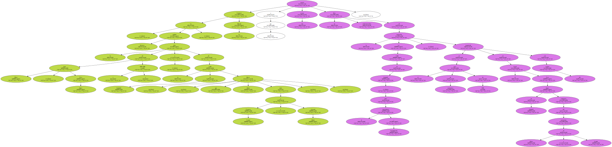Bartomeu Cruells , portavoz de La Mirada , explicó que la edición de " un catálogo en forma de álbum fotográfico y documental " inspirado en la exposición de Sabadell era un proyecto antiguo de la entidad.
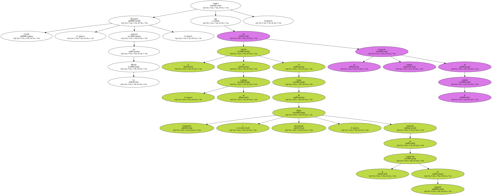Como la muestra del centenario " duró menos de un mes " , añadió Cruells , los seguidores de la Colla se pusieron manos a la obra para completarla con este libro que respetará la estructura de la exposición y recogerá todas las fotografías y documentos que se exhibieron.

La obra presentará a los intelectuales de principios de siglo que en 1918 crearon la Colla de Sabadell o Grup La Mirada , una generación de escritores con un humor absurdo y provocativo y un ideal de modernidad cosmopolita frente a la cerrada sociedad sabadellense.
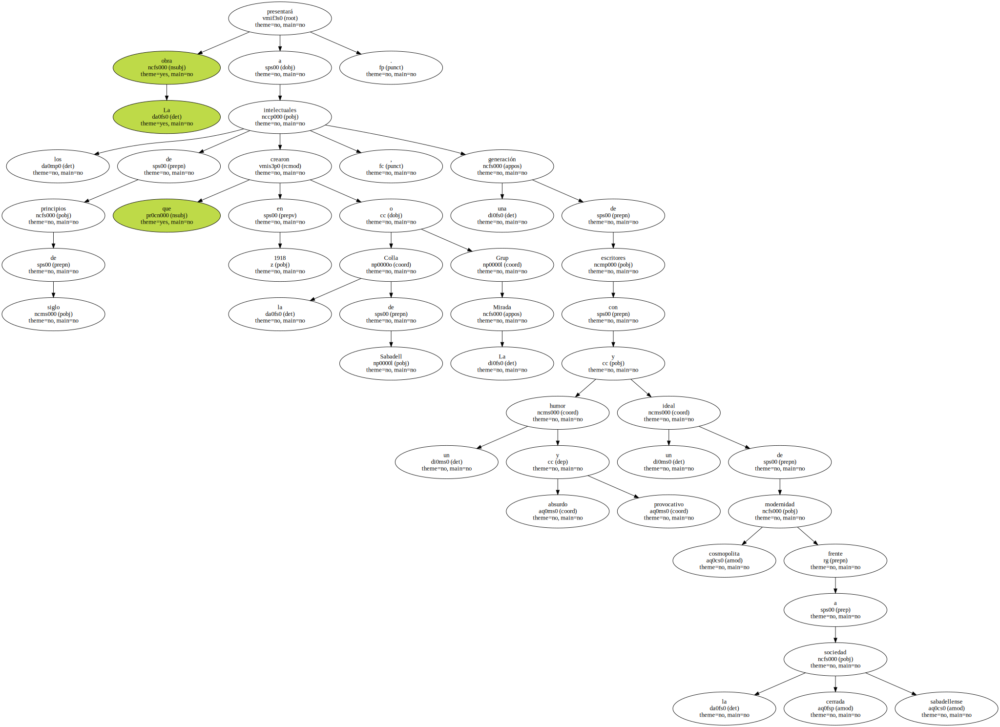El repaso abarca la época de acciones provocadoras , ya que " eran unos gamberretes de casa buena " , según Cruells , y " el papel político que jugaron en la guerra haciéndose cargo del patrimonio cultural de la Generalitat republicana ".

La Colla creó la Institució de les Lletres Catalanes y la Associació d'Escriptors Catalans , además de participar en la Revista de Catalunya -.
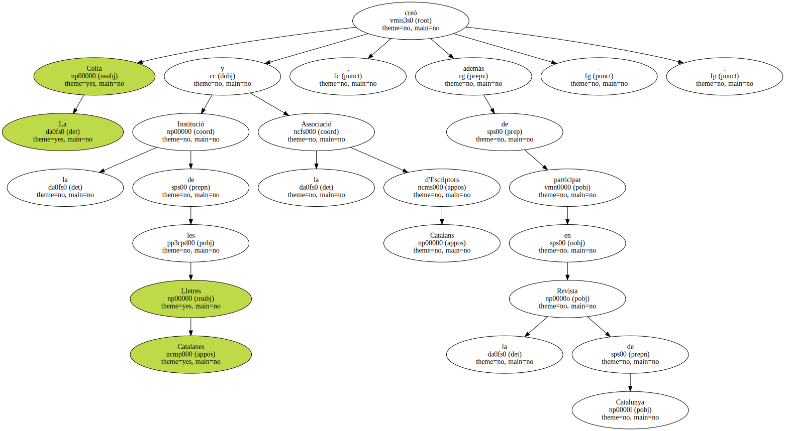Para lograr " una coherencia estilística " , el álbum-catálogo lo diseñan personas del mismo equipo técnico que montó la muestra.
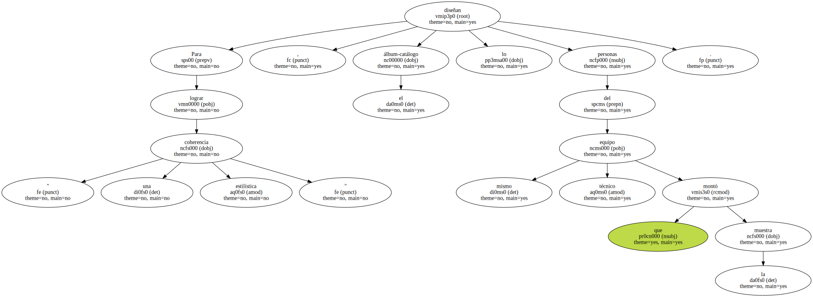La Fundació presentará el libro en la Casa del Marquet de La Roca , situada en Sant Llorenç Savall , que planea convertir en un museo literario y centro cultural.
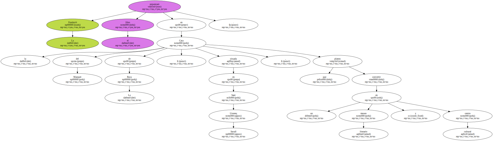La Diputació de Barcelona , que ha cedido la gestión del inmueble modernista donde residió la familia de Oliver y se reunía el grupo , ha acabado el proyecto arquitectónico para transformar dos corrales y una cochera en salas de exposición permanente.
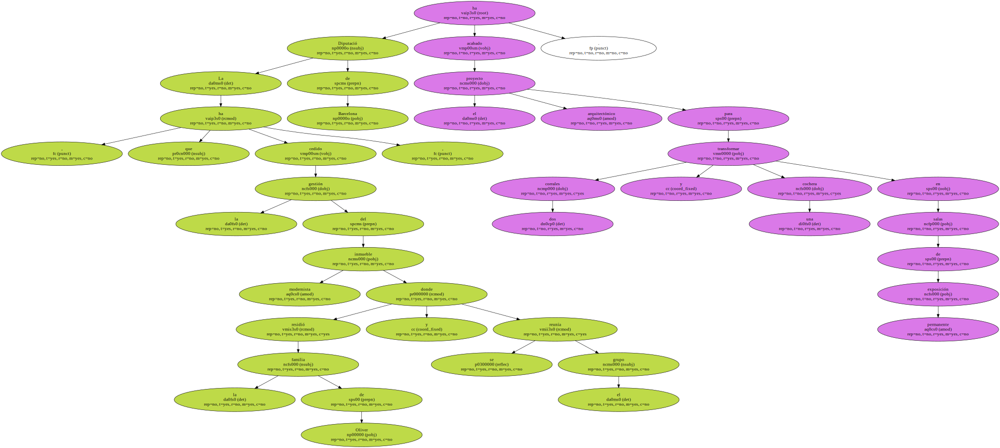Cruells confirmó que la Fundació está " gratamente sorprendida " de la propuesta del organismo provincial.
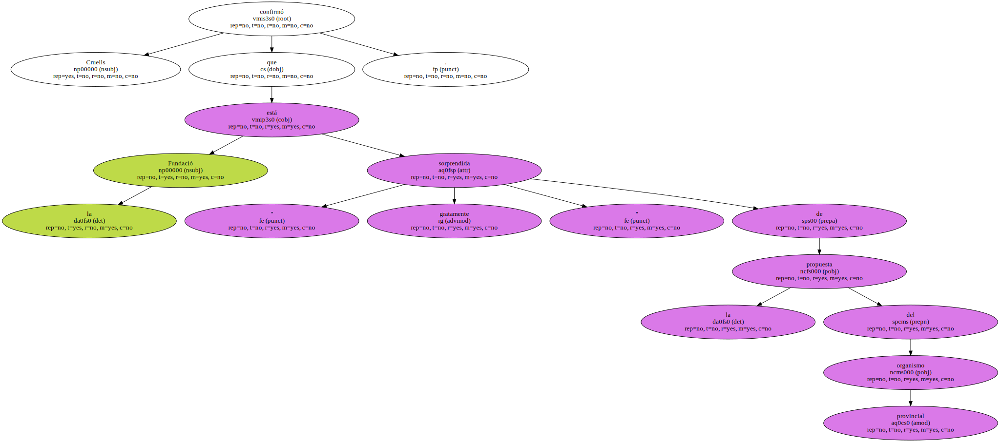La diputación aprobó un presupuesto de 54 millones para adecuar el edificio y las salas.
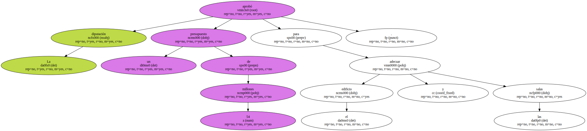El otro proyecto editorial , aunque éste todavía no tiene un calendario definido , es la recuperación en un libro de " todos los cuentos que Francesc Trabal publicó durante las décadas de los años 20 y 30 " , avanzó el portavoz.
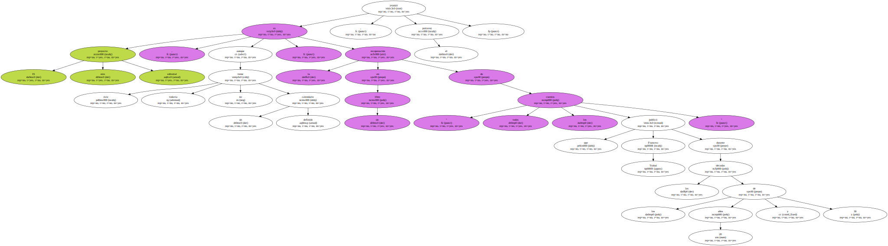Cruells recordó que hasta el momento no existe un volumen recopilatorio de estas obras del autor y la investigación está siendo lenta porque " se ha localizado material totalmente desconocido ".
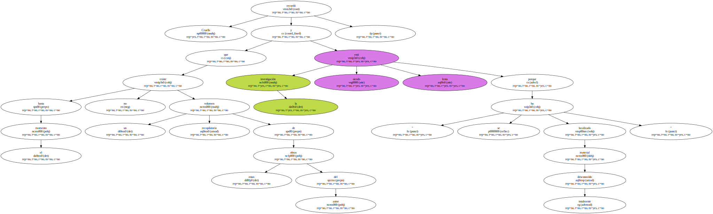